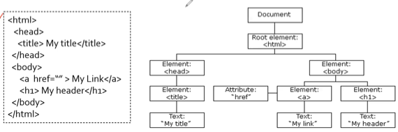
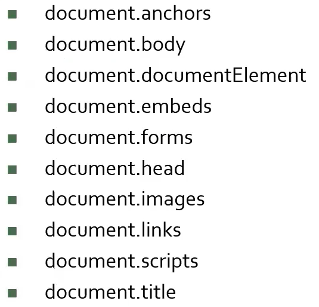
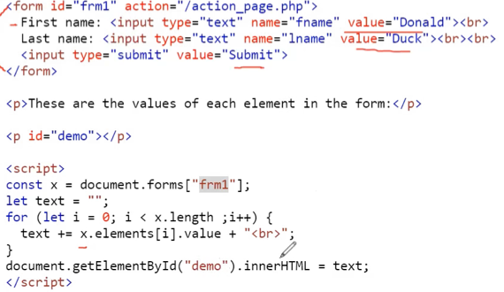
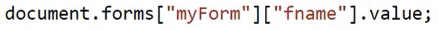
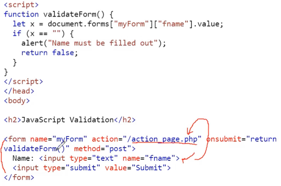
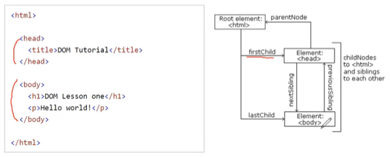
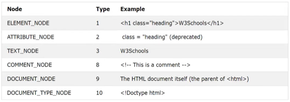

충남대학교 컴퓨터공학과 이규철 교수님의 "웹 프로그래밍" 강의를 필기한 내용입니다.
다소 잘못된 내용과 구어적 표현 이 포함되어 있을 수 있습니다.
JS DOM 구조
- 아래 그림처럼 구조가 되어 있다

- 리프노드는 무조건 Text node 이다
- 그리고 Attribute는 트리에 속한다기보다는 그냥 해당 노드를 설명해준다고 생각하면 됨 - attribute node는 deprecated되었다는 것
- DOM의 종류는 세가지가 있다
- Core DOM : 모든 형식에 공통적으로 적용되는 표준
- XML DOM : XML 형식의 문서에 적용되는 표준
- HTML DOM : HTML 형식의 문서에 적용되는 표준
HTML DOM
- HTML요소들을 객체로 표현하고 각각에 대해 필드와 메소드를 정의하며, 발생시킬 수 있는 Event들이 정의되어 있음
- 대표적인 tag들은 아래처럼 document의 property로 정의되어 있어 바로 사용하는 것이 가능하다
HTML tag property

- 이놈은 아래와 같은 방식으로 사용 가능하다

document.elementNames을 통해 해당 태그를 모아서 HTML Collection으로 받아올 수 있다 - HTML Collection이기 때문에 예시에서 보이는것처럼 인덱스 말고도 name이나 id로 접근이 가능하며 Chaining도 가능하다

- 또한 이런 방식으로 선택한 객체에는
.elements라는 property가 있어서 그의 자식들에 index로 접근할 수 있고 자식의 갯수는.length로 얻어올 수 있다
Form validation

- 여기서 주의깊게 볼 점은
onsubmit이다 - 위에서처럼 submit을 했을때 콜백함수를 정의해주고
onsubmit의 값으로 return callback 을 넣어주면 콜백함수가true를 반환했을 때 정상적으로 리퀘스트가 날라가고 아니라면 리퀘스트를 날리지 않는 동작을 해줄 수 있다 - Validation은 다음과 같이 분류할 수 있다는거 - 걍 알아두기만 해라
- 어디서 검증?
- Client-side validation
- Server-side validation
- 어떻게 검증?
- HTML Input Attributes : 뭐 required같은 속성 넣어서
- CSS Pseudo Selectors : CSS의 기능을 사용
- DOM Properties and methods : JS의 메소드 사용
- 어디서 검증?
Events
onload,onunload: 화면의 구성이 끝났을때, 화면에서 DOM트리 제거가 완료되었을때의 이벤트onchange: input등에서 입력값이 바뀌었을때의 이벤트 - 입력할때마다 바뀌는 건 아니고 enter등의 행위를 해줘야됨onfocus: input등을 클릭해 커서가 깜빡거리는 상태가 되었을 때의 이벤트- 이벤트를 프로퍼티에 함수를 할당하는 방식은 allocation연산이기 때문에 여러개의 콜백을 정의할 수 없지만
.addEventListener()는 할당이 아닌 추가이기 때문에 여러개의 콜백을 정의할 수 있다 - 이벤트에 대한 콜백을 지우는 것은
.removeEventListener()를 쓰면 되는데 너가 저번에 해봐서 알다시피 콜백을 지우는 상황이 생기면 그 콜백을 익명함수로 선언하지 말고 이름을 붙여주는게 정신적으로 이롭다 - 그리고
.addEventListener()함수에 들어가는 콜백은 인자를 안받거나 event객체만 받을 수 있으므로 더 많은 인자를 주기 위해서는 더 많은 인자를 받은 함수를 정의하고 그걸 wrapping해서 콜백으로 넣어주면 된다 - 알다시피 event객체의 type프로퍼티를 통해 이벤트의 이름을 갖고 올 수 있고 target프로퍼티를 통해 이벤트를 발생시킨놈 객체를 갖고올 수 있다
Event bubbling, Event Capturing
- 일단
.addEventListener()메소드의 세번째 인자 이름이useCapture인 것을 알고있을것이다 - 얘는 기본적으로 false의 값을 가지게 되며 이때는 Event Bubbling이 일어나게 된다
- 하지만 true를 넣어주면 이때는 Event Capturing 이 일어나게 된다
- Event Bubbling이라는 것은 이벤트가 발생했을때 이벤트를 발생시킨 놈에서부터 시작해서 그의 상위 컴포넌트로 점차 확장되는 형태를 말하고
- Event Capturing이라는 것은 이벤트가 발생했을 때 이벤트를 발생시킨 놈에서부터 시작하는게 아니라 최상위 컴포넌트에서부터 시작하여 발생시킨놈까지 하위 컴포넌트로 내려오며 이벤트가 전이되는 형태를 말한다
- 따라서 이건 상위컴포넌트와 하위컴포넌트에 동일한 종류의 이벤트에 대한 콜백이 정의되어 있을때 고려해줘야 한다 - 다른 이벤트에 대한 콜백이 정의되어 있으면 어차피 전이되어봤자 실행되어야 할 콜백이 없으므로
- 예를들어 상위컴포넌트와 하위컴포넌트 모두 onclick에 대한 콜백이 정의되어 있으면 bubbling시에는 하위 컴포넌트를 누르면 하위 콜백 → 상위 콜백이 실행된다
- 하지만 capturing일때는 하위 컴포넌트를 눌렀을 때 상위 콜백 → 하위 콜백 순서로 실행되게 된다
DOM Navigation
- DOM 객체들 간의 관계

- 위 그림 보면 걍 딱 이해된다
- 교수가
nodeName이라는 프로퍼티에 대해 좀 설명을 해주던데- 얘는 일단 read-only한 대문자 값이다
- 또한 element의 경우에는 tag 의 이름
- attribute일 경우에는 attribute 이름
- text node의 경우에는 무조건
#text이고 document의 경우에는 무조건#document이다
- 그리고
nodeValue에 대해서도 설명하는데- 얘는
textNode만 갖고 있는 값이다 - 다른것들은 null의 값을 가짐 - 그리고
textNode의 값을 나타내는 것이다
- 얘는
- 뭔
nodeType같은것도 알려주는데 그건 이 아래 표 보면 깔끔하다

DOM 조작
.insertBefore()메소드는 이름처럼 주어진 element이전에 붙이는 거다- 사용방법은 이거처럼 하면 된다
부모.insertBefore(이놈을, 이놈앞에 /* - 얘는 "부모"의 자식이어야함 */);.remove()는 자기자신을 지우는 메소드 - 구형 브라우져 지원안함.removeChild()을 이용해부모.removeChild(자식)이래 쓰는 것을 권장한댄다.replaceChild()를 이용해 요소를 바꿔치기할 수 있댄다
부모.replaceChild(이놈을, 이놈대신 /* - 얘는 "부모"의 자식이어야함 */);- HTML Collection이랑 NodeList는 비슷하지만 아래와 같은 차이점이 있다
- NodeList는
.querySelectorAll()이나.childNodes로 받아올 수 있다 - 메소드나 프로퍼티에 따라 다르다는 점 - 그리고 HTML Collection은 index말고도 name이나 id로 접근이 가능하지만 NodeList는 인덱스로밖에 접근이 안된다
- NodeList는